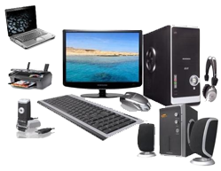

INFORMACION PARA ESTUDIAR COMPUTACION E INFORMATICA


MENU
La Computación es la disciplina que se encarga del estudio de las computadoras, abarcando su diseño,
desarrollo y procesamiento (hardware), mientas que la Informática recoge y ordena los datos convirtiéndolos en
información sencilla (software).Estudiando nuestra
carrera podrás culminar tus estudios en menor tiempo y acceder a la convalidación que te permitirá obtener un título universitario en UPC, UPN, ESAN y La Salle.
carrera podrás culminar tus estudios en menor tiempo y acceder a la convalidación que te permitirá obtener un título universitario en UPC, UPN, ESAN y La Salle.
¿QUÉ SE ESTUDIA EN COMPUTACIÓN E INFORMÁTICA?
Nuestra malla curricular en Computación e Informática destaca por ofrecerte una formación holística en habilidades blandas y en conocimiento técnico avanzado. Dentro de la carrera aprenderás a desarrollar soluciones multiplataformas aplicando criterios de calidad y seguridad informática a un nivel avanzado.
Nuestra malla curricular en Computación e Informática destaca por ofrecerte una formación holística en habilidades blandas y en conocimiento técnico avanzado. Dentro de la carrera aprenderás a desarrollar soluciones multiplataformas aplicando criterios de calidad y seguridad informática a un nivel avanzado.
Además de contar con la modalidad de clases precenciales en nuestra provincia de Cutervo en el INSTITUTO DE ESDUCACION SUPERIOR TECNOLOGICO PUBLICO CUTERVO,
tambien podrás estudiar de forma semi presencial en nuestras sedes de Independencia, Breña, Bellavista, San Juan, Lima Centro, Trujillo y Arequipa.